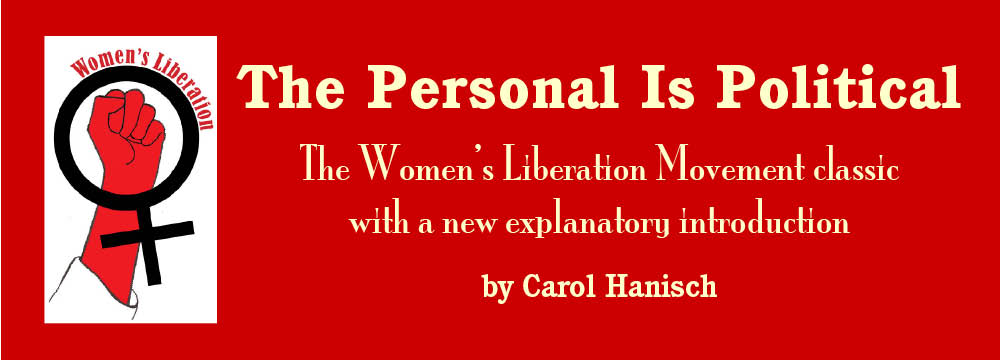

the
personal is political, the personal is political, the personal is
political, women's liberation, feminist theory, feminist theory, women's
liberation, feminism,feminism, sexism, sexism, feminism |
|
 |
|
INTRODUCTIONJanuary 2006 The paper, “The Personal Is Political,” was originally published in Notes from the Second Year: Women’s Liberation in 1970 and was widely reprinted and passed around the Movement and beyond in the next several years. I didn’t know just how much it had gotten around until I did a Google search and found it being discussed in many different languages. I’d like to clarify for the record that I did not give the paper its title, “The Personal Is Political.” As far as I know, that was done by Notes from the Second Year editors Shulie Firestone and Anne Koedt after Kathie Sarachild brought it to their attention as a possible paper to be printed in that early collection. Also, “political” was used here in the broad sense of the word as having to do with power relationships, not the narrow sense of electorial politics. The paper actually began as a memo that I wrote in February of 1969 while in Gainesville, Florida. It was sent to the women’s caucus of the Southern Conference Educational Fund (SCEF) a group for whom I was a subsistence-paid organizer doing exploratory work for establishing a women’s liberation project in the South. The memo was originally titled, “Some Thoughts in Response to Dottie’s Thoughts on a Women’s Liberation Movement,” and was written in reply to a memo by another staff member, Dottie Zellner, who contended that consciousness-raising was just therapy and questioned whether the new independent WLM was really “political.” This was not an unusual reaction to radical feminist ideas in early 1969. WLM groups had been springing up all over the country—and the world. The radical movements of Civil Rights, Anti-Vietnam War, and Old and New Left groups from which many of us sprang were male dominated and very nervous about women’s liberation in general, but especially the spectre of the mushrooming independent women’s liberation movement, of which I was a staunch advocate. Arriving in New York City after ten months in the Mississippi Civil Rights Movement, I had found SCEF to be one of the more mature and better progressive groups around. It had a good record of racial, economic and political justice work since New Deal days, and I joined its staff in 1966 as its New York office manager. SCEF allowed New York Radical Women to meet in its New York office, where I worked, and at my request agreed to explore setting up a women’s liberation project in the South. However, many on the SCEF staff, both men and women, ended up joining the criticism of women getting together in consciousness-raising groups to discuss their own oppression as “naval-gazing” and “personal therapy”—and certainly “not political.” They could sometimes admit that women were oppressed (but only by “the system”) and said that we should have equal pay for equal work, and some other “rights.” But they belittled us no end for trying to bring our so-called “personal problems” into the public arena—especially “all those body issues” like sex, appearance, and abortion. Our demands that men share the housework and childcare were likewise deemed a personal problem between a woman and her individual man. The opposition claimed if women would just “stand up for themselves” and take more responsibility for their own lives, they wouldn’t need to have an independent movement for women’s liberation. What personal initiative wouldn’t solve, they said, “the revolution” would take care of if we would just shut up and do our part. Heaven forbid that we should point out that men benefit from oppressing women. Recognizing the need to fight male supremacy as a movement instead of blaming the individual woman for her oppression was where the Pro-Woman Line came in. It challenged the old anti-woman line that used spiritual, psychological, metaphysical, and pseudo-historical explanations for women’s oppression with a real, materialist analysis for why women do what we do. (By materialist, I mean in the Marxist materialist (based in reality) sense, not in the “desire for consumer goods” sense.) Taking the position that “women are messed over, not messed up” took the focus off individual struggle and put it on group or class struggle, exposing the necessity for an independent WLM to deal with male supremacy. The Pro-Woman Line also helped challenge the “sex role theory” of women’s oppression that said women act as we do because “that’s how we were taught” by “society.” (We all can think of things we were taught to think or do that we rejected once the forces that kept us thinking or doing them were removed.) It was consciousness-raising that led to the emergence of the Pro-Woman Line with its scientific explanation based on an analysis of our own experiences and an examination of “who benefits” from women’s oppression. Understanding that our oppressive situations were not our own fault—were not, in the parlance of the time, “all in our head”—gave us a lot more courage as well as a more solid, real foundation on which to fight for liberation. “The Personal is Political” paper and the theory it contains, was my response in the heat of the battle to the attacks on us by SCEF and the rest of the radical movement. I think it’s important to realize that the paper came out of struggle—not just my struggle in SCEF but the struggle of the independent WLM against those who were trying to either stop it or to push it into directions they found less threatening. It’s also important to realize the theory the paper contains did not come solely out of my individual brain. It came out of a movement (the Women’s Liberation Movement) and a specific group within that movement (New York Radical Women) and a specific group of women within New York Radical Women, sometimes referred to as the Pro-Woman Line faction. Of course there were women within New York Radical Women and the broader feminist movement who argued from the beginning against consciousness raising and claimed women were brainwashed and complicit in their own oppression, an argument rooted in the sociological and psychological rather than the political. They, too, helped in the formulation of Pro-Woman Line theory. By arguing the then “standard wisdom” against us, they forced us to clarify and hone and develop and refine and articulate the new theory so that it could be spread more widely. After New York Radical Women meetings, the Pro-Woman Line faction would usually end up at Miteras, a nearby restaurant that served fantastic apple pie a la mode. There we would discuss how the meeting had gone and the ideas that had been talked about until two or three in the morning, both agreeing with and challenging each other in wonderful, lively debate among ourselves. In September of 1968—six months before “The Personal Is Political” was written, the Miss America Protest brought home to many why the Pro-Woman Line theory we were developing was so important when it came to taking action outside the group. In another paper entitled “A Critique of the Miss America Protest” I wrote about how the anti-women faction of the protesters detracted from our message that ALL women are oppressed by beauty standards, even the contestants. Signs like “Up Against the Wall, Miss America” and “Miss America Is a Big Falsie” made these contestants out to be our enemy instead of the men and bosses who imposed false beauty standards on women. Political struggle or debate is the key to good political theory. A theory is just a bunch of words— sometimes interesting to think about, but just words, nevertheless—until it is tested in real life. Many a theory has delivered surprises, both positive and negative, when an attempt has been made to put it into practice. While trying to think how I would change “The Personal Is Political” paper if I could rewrite it with today’s hindsight, I was actually surprised how well it stands the test of time and experience. There are a few things I would elaborate on, like my simplistic definition of class, and there are a few statements in the paper that are badly in need of further development. Perhaps the two that bothers me the most are: “Women are smart not to struggle alone” and “It is no worse to be in the home than in the rat race of the job world.” The first statement doesn’t mean that women are smart not to struggle at all, as some have interpreted the Pro-Woman Line. Women are sometimes smart not to struggle alone when they can’t win and the repercussions are worse than the oppression. However, individual struggle does sometimes get us some things, and when the WLM is at low tide or invisible, it may be the best we can do. We need to always be pushing the envelope. Even when the WLM is at high tide, because our oppression often takes place in isolated circumstances like the home, it still takes individual action to put into practice what the Movement is fighting for. But individual struggle is always limited; it’s going to takes an ongoing Movement stronger than any we’ve seen so far to put an end to male supremacy. On the second point, I have come to agree with Susan B. Anthony that to be free, a woman must have “a purse of her own.” Women can’t be independent without participating in the public workforce. That also means uniting in a fight for public childcare and for a restructuring of the workplace with women’s equality in mind, while insisting men share the housework and childcare on the homefront, so that women don’t end up having to do it all. I wish we could have anticipated all the ways that “The Personal Is Political” and “The Pro-Woman Line” would be revised and misused. Like most of the theory created by the Pro-Woman Line radical feminists, these ideas have been revised or ripped off or even stood on their head and used against their original, radical intent. While it’s necessary that theories take their knocks in the real world, like everything else, many of us have learned that once they leave our hands, they need to be defended against revisionism and misuse. What follows is the original version of “The Personal Is Political” as edited from the memo for the 1970 anthology, Notes from the Second Year: Women’s Liberation, edited by Shulamith Firestone and Anne Koedt. — Carol Hanisch |
The Personal Is Political
|
The Personal is Political, feminist theory,the personal is political, feminist theory, the personal is political, feminist theory, the personal is political, feminist theory, women's liberation © Copyright 2009 Carol Hanisch. All rights reserved. |
|